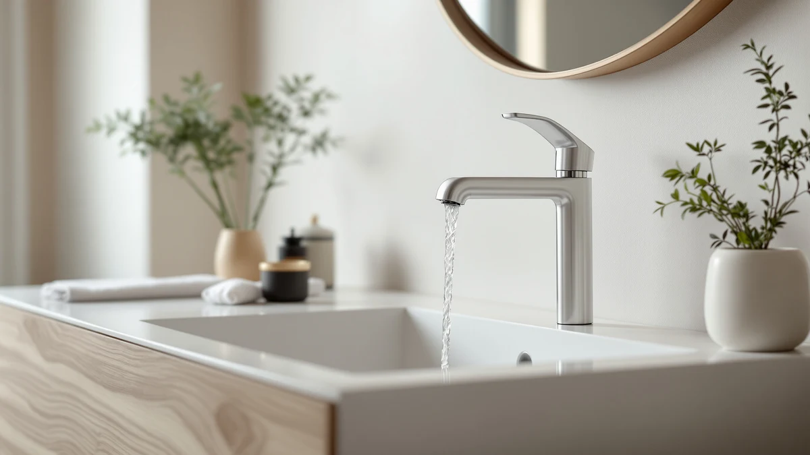

The Best Modern Sink Faucets (2026)
Prices and picks verified as of September 2026. Independent, reader-supported reviews.


Quick Answer
The Moen Revyl Chrome One-Handle is our top pick among the best modern sink faucets this year, pairing a single-lever handle with a mirror-bright chrome finish that suits almost any vanity. The Casavilla matte black set is the strongest budget alternative for a darker, farmhouse-modern bathroom, and our faucet extender picks solve a different problem entirely: getting small hands to the water on a faucet you already own.
Our pick: Moen Revyl Chrome One-Handle Single, $58.17 Check Price on Amazon
Bottom line: our top pick is the Moen Revyl Chrome One-Handle Single Hole Modern Bathroom Sink at $61.44. The best budget option is the Faucet Extender for Toddlers - Sink Extender for Kids Hand at $5.66.
Things to Know Before You Buy
- Hole count matters before finish does. Check whether your sink deck has one hole, three holes, or a wall-mount setup before you shop for the best modern sink faucets, because a single-handle faucet like the Moen Revyl won't cover a three-hole spread without an extra deck plate.
- Chrome and matte black lead the modern lineup. Every full faucet on this list ships in one of these two finishes, and both resist fingerprints and water spots better than polished brass or oil-rubbed bronze.
- A faucet extender is not a faucet. Four of our seven picks attach to a faucet you already own so a toddler can reach the water; they belong in this guide because they solve a problem at the same sink, but they won't replace an aging fixture.
- Deck plates cover extra holes. If you're swapping a widespread faucet for a single-handle model, look for a pick that includes a deck plate, like the Moen Revyl and Casavilla sets do here.
We researched and compared the best modern sink faucets you can buy right now, weighing handle type, finish, and how each one fits a standard bathroom sink deck. Some of these are complete faucets you install in place of an old fixture. Others are simple extenders that clip onto a faucet you already have.
Our top pick is the Moen Revyl Chrome One-Handle, a single-hole faucet with a lever handle and a spring-loaded drain assembly that skips much of the fiddly install work of an older two-handle set. At $58.17 it costs more than the budget picks here, but Moen's name behind the part and the included deckplate option make it the safest single recommendation for most vanities.
If your bathroom runs darker, the Casavilla matte black set is worth a look, and it comes as a two-pack, so it works out well if you're updating more than one sink at once. The last four picks step away from full faucet replacement entirely: they're inexpensive extenders that snap onto your existing spout so a toddler can reach the water without a step stool. We kept them in this guide because readers shopping for a modern sink faucet often ask about them in the same breath, but treat them as an add-on, not a substitute for the fixture itself.
Why You Should Trust Us
Best Bathroom Faucets covers one part of the house: the fixtures at your sink, tub, and shower. Ilane Tall, our home and bath expert, spends a good part of every month reading manufacturer spec sheets, comparing installation notes, and tracking price changes on the faucets we recommend, including the picks in this modern sink faucets roundup.
We don't run a paid testing lab, and we don't quote experts who don't exist. When a listing claims a certain cycle count on a cartridge or a specific flow rate, we check it against the manufacturer's own page before repeating it here. If we can't verify a claim, we leave it out.
How We Picked
We started by narrowing the field to faucets marketed as modern sink faucets: single-lever handles, clean lines, and a finish that reads current rather than dated. That ruled out the ornate two-handle, cross-handle sets that still dominate traditional bathroom lines.
From there we checked hole compatibility. A single-hole faucet like the FORIOUS needs a sink deck drilled for one fixture, while a set that ships with a deck plate, like the Casavilla, can cover a wider three-hole spread too. We also weighed price against what's actually included, since a $45.99 faucet that ships as a two-pack with a pop-up drain is a different value than a $58.17 single unit. Finally, we added the faucet extenders because readers researching a sink upgrade for a family bathroom often want both answers in one guide.
How We Compared
We don't have a lab full of running water lines, so our evaluation leans on what's verifiable: manufacturer spec sheets, the installation notes in each listing, and the multiple product photos each brand provides, which we review at full size to check finish, handle shape, and spout profile before writing a word.
For the four faucet extenders, we compared the stated compatibility range (the diameter and shape of spout each one fits) against common modern sink faucet designs, since an extender built for a gooseneck spout can miss on a straight one. We flag any fit limitation we found in the pros and cons below rather than bury it in the fine print.
Our Picks

Moen Revyl Chrome One-Handle Single
What we like
- Single-lever handle makes temperature control a one-hand job
- Mirror-bright chrome finish pairs with almost any vanity hardware
- Optional deckplate lets it cover a three-hole sink deck if you're not re-drilling
Flaws but not dealbreakers
- Costs more than the other complete faucets in this guide
- Chrome shows water spots faster than a matte finish, so it needs more frequent wiping
| Material | Brass + finish |
| Size | — |
The Moen Revyl earns the top spot in this modern sink faucets guide mostly because of what it doesn't make you do. You get one lever instead of two handles, a chrome finish reflective enough to match brushed or polished hardware nearby, and a spring-loaded drain assembly that lifts and drops without a separate rod running through the deck. Moen backs the line with the kind of brand support that matters when a cartridge eventually needs a replacement part years down the line.
At $58.17 it isn't the cheapest single-hole faucet here, and you'll want to budget separately if your sink deck is drilled for three holes and doesn't already come with a matching deckplate in the box. But for a straightforward swap where you want one modern faucet that looks right in five years the way it does on day one, it's the pick we'd point most people to first.

Casavilla Bathroom Faucets Set with
What we like
- Ships as a two-pack with a pop-up drain and supply lines included
- Matte black hides water spots better than a polished finish
- Works with a 1-hole or 3-hole deck thanks to the included cover plate
Flaws but not dealbreakers
- Two-pack format is wasted money if you only need one faucet
- At a 7.2-inch overall height, it sits lower than some modern designs
| Material | Brass + finish |
| Size | 7.2 inch |
Casavilla's set solves a specific problem: outfitting two sinks that need to match without buying two separate faucets and hoping the finishes line up. Each set includes the faucet, a 6.3-inch hole cover, a pop-up drain with overflow, and supply lines, so you're not assembling parts from three different brands. The matte black finish and single-lever handle keep it in line with the modern look the rest of this guide is built around.
The 7.2-inch overall height and 4.3-inch spout height put it on the shorter side, which matters if you're used to a taller faucet clearing a wide vessel bowl. It's built for a standard drop-in or undermount sink, not a bowl sink that sits above the counter. For a farmhouse-modern vanity refresh where you need two faucets to match, it's the most complete package here for the price.

FORIOUS Bathroom Faucet 1 Hole
What we like
- Single-handle temperature control with a compact footprint
- Matte black finish matches the Casavilla set if you're mixing brands
- Spout design aims to cut down on splash and noise at the basin
Flaws but not dealbreakers
- Shorter spout height means less clearance over a deep or oversized bowl
- One-hole only, so it won't help if your deck is drilled for three
| Material | Brass + finish |
| Size | Short |
FORIOUS keeps things simple with a single-hole, single-handle faucet built specifically for decks that don't have room, or need, for a deck plate. The matte black finish matches the Casavilla set closely enough that you could mix the two across a his-and-hers vanity without the finishes clashing under bathroom lighting.
Its shorter, compact size, listed as "Short" in our spec check, is a plus in a tight powder room but a limitation over a deep vessel sink, where you'd want more spout clearance. If your sink is already drilled for a single hole and you want a faucet that stays out of the way, it's a solid also-great pick alongside our top two.

Faucet Extender for Toddlers -
What we like
- Cheapest pick in this guide by a wide margin
- No tools needed to attach it to a standard faucet
- Simple enough for a toddler to use without help once it's installed
Flaws but not dealbreakers
- It's an accessory, not a faucet upgrade, so it won't change your bathroom's look
- Plastic construction feels less durable than the silicone extenders also on this list
| Material | Brass + finish |
| Size | — |
This is the cheapest item in the whole guide, and it's worth being upfront about what it is: a plastic sink extender that clips onto a faucet you already own so a toddler can reach the water without standing on a step stool. It doesn't replace a faucet, and it won't change how your sink deck looks, but at $5.66 it's a low-risk way to solve a daily annoyance in a family bathroom.
Installation is tool-free, which matters if you want your child using it independently once it's on. The plastic build is lighter and less refined than the silicone extenders elsewhere on this list, so if durability matters more than price, one of the other extender picks below might hold up better to daily tugging and twisting.

SKYROKU Faucet Extender for Toddlers
What we like
- Built-in temperature indicator changes color above 120°F
- Wider U-shaped flow reduces splashing compared to a round spout
- Fits most standard faucets, front-facing spouts up to 2.5 inches in diameter
Flaws but not dealbreakers
- Won't fit a pull-out sprayer or a spout wider than 2.5 inches
- Costs almost twice as much as our budget extender pick
| Material | Brass + finish |
| Size | — |
SKYROKU's extender adds a real safety feature the budget pick doesn't have: a temperature-sensitive section that turns white once the water crosses 120°F, giving a parent, or a curious kid, a visual cue before things get uncomfortably hot. The 5.5-inch U-shaped spout also spreads the flow wider than a standard round nozzle, which cuts down on splash around the basin.
The trade-off for the extra safety feature is fit range. It's built for front-facing, horizontal spouts between roughly 0.6 and 2.5 inches in diameter, so measure your existing faucet before buying, since a pull-out sprayer head or an oversized modern spout won't hold it securely. For a straightforward single-hole faucet like our top three picks, it should fit without issue.

KOMIDK Faucet Extender for Bathroom
What we like
- Silicone and PP construction detaches easily for cleaning
- Marketed to fit bathroom, kitchen, and tub faucets instead of one shape only
- No tools required for installation or removal
Flaws but not dealbreakers
- Broad compatibility claims mean it's worth double-checking fit on an unusual spout shape
- Softer silicone body may feel less sturdy than a rigid plastic extender
| Material | Brass + finish |
| Size | — |
KOMIDK positions its extender as the flexible option: silicone and PP construction meant to stretch across more faucet shapes than a rigid plastic piece, plus a detachable design that comes apart for a proper cleaning instead of a quick wipe-down. That matters more than it sounds for an accessory that sees soap and toothpaste residue every day.
At $7.99 it sits in the middle of the extender pack price-wise, a couple dollars over the cheapest option and well under the SKYROKU temperature-sensing pick. If your household mixes faucet styles, a bathroom faucet in one room and a different spout shape in another, the broader compatibility claim here is the reason to choose it over an extender built for a single spout shape.

Faucet Extender for Toddlers Rabbit
What we like
- Thermochromic color change warns when water passes 113°F
- Soft silicone, PP, and PVC build is gentle on a child's hands
- Universal, tool-free fit designed for standard and gooseneck spouts
Flaws but not dealbreakers
- Novelty rabbit design won't appeal to every kid or every bathroom's decor
- A similar temperature-warning feature is available on the SKYROKU pick for a few dollars more
| Material | Brass + finish |
| Size | — |
This extender covers similar ground to the SKYROKU pick, a color-changing safety warning and a soft, kid-friendly build, but wraps it in a playful rabbit shape that some younger kids take to more readily than a plain bear or a generic plastic nozzle. The material list, silicone, PP, and PVC, is built around smooth, burr-free edges specifically for small hands.
It's rated to flag water above 113°F, a slightly lower threshold than SKYROKU's 120°F cutoff, so it errs a bit more cautious. At $6.59 it undercuts SKYROKU by a few dollars while keeping the same universal, tool-free fit on standard and gooseneck spouts. If your child responds to a fun design more than a practical one, this is the extender in the lineup worth trying first.
Quick Comparison
| Product | Material | Price | Rating | Best for | Get it |
|---|---|---|---|---|---|
| Moen Revyl Chrome One-Handle Single | Brass + finish | $58.17 | 4 | Most bathrooms wanting a single-lever upgrade | View on Amazon → |
| Casavilla Bathroom Faucets Set with | Brass + finish | $45.99 | 4 | Matching two sinks in matte black | View on Amazon → |
| FORIOUS Bathroom Faucet 1 Hole | Brass + finish | $53.99 | 4 | Compact single-hole decks | View on Amazon → |
| Faucet Extender for Toddlers - | Brass + finish | $5.66 | 4 | Lowest-cost toddler sink access | View on Amazon → |
| SKYROKU Faucet Extender for Toddlers | Brass + finish | $9.99 | 4 | Parents wanting a temperature warning | View on Amazon → |
| KOMIDK Faucet Extender for Bathroom | Brass + finish | $7.99 | 4 | Multi-faucet households | View on Amazon → |
| Faucet Extender for Toddlers Rabbit | Brass + finish | $6.59 | 4 | Kids who want a fun design | View on Amazon → |
What's the difference between a single-hole and a widespread modern sink faucet?
A single-hole faucet like the Moen Revyl or FORIOUS mounts through one hole in your sink deck, with the handle and spout built into a single unit.
Do I need a deck plate to install one of these faucets?
Only if your sink is drilled for more holes than the faucet uses.
The Competition
Every complete faucet in this guide is a single-hole, single-lever design, and that's a deliberate boundary. Widespread three-hole faucets with separate hot and cold handles are still common in traditional bathrooms, but they didn't fit the modern sink faucet brief we set for this guide, so we left that whole category out. If your vanity is drilled for a widespread setup, our single-hole sink faucets guide covers the conversion question in more depth.
We also skipped touchless faucets for this particular list. They solve a different problem, hygiene and hands-free use, and deserve their own comparison rather than a footnote here; see our touchless bathroom faucets guide if that's what you're after. Waterfall spouts got the same treatment: they're a modern look in their own right, but an open-channel spout behaves differently enough day to day that we cover them separately in our waterfall sink faucets guide instead of folding them into this one.
Across all seven picks, the Moen Revyl remains our recommendation for the best modern sink faucets for most bathrooms, with the Casavilla set and the FORIOUS faucet as the strongest alternatives depending on finish and budget.
Frequently Asked Questions
What's the difference between a single-hole and a widespread modern sink faucet?
A single-hole faucet like the Moen Revyl or FORIOUS mounts through one hole in your sink deck, with the handle and spout built into a single unit. A widespread faucet spreads the handles and spout across three separate holes. Most of what people mean by a modern sink faucet today is the single-hole, single-lever style, which is why every complete faucet in this guide uses that layout.
Do I need a deck plate to install one of these faucets?
Only if your sink is drilled for more holes than the faucet uses. The Moen Revyl offers an optional deckplate for exactly this situation, and the Casavilla set ships with a cover plate that lets it work on either a 1-hole or 3-hole deck. Check how many holes your current faucet uses before you order a replacement.
Are faucet extenders like the ones in this guide actually faucets?
No. A faucet extender clips onto the spout of a faucet you already own, and it doesn't replace the fixture or change your sink's look. We include picks like the SKYROKU and KOMIDK extenders in this modern sink faucets guide because readers researching a sink upgrade for a family bathroom often want both answers in one place, but they solve a different problem than the three complete faucets above.